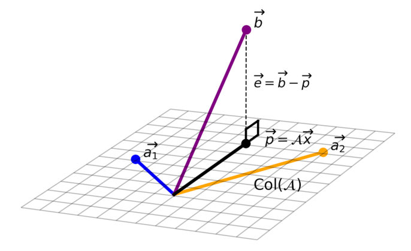

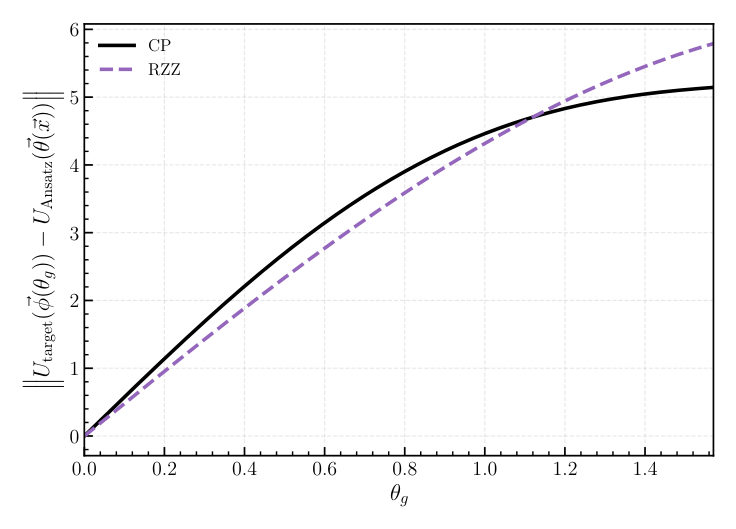
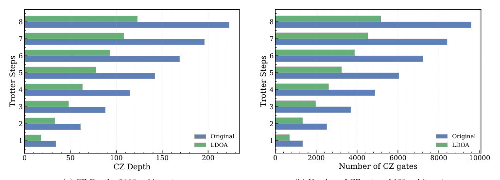
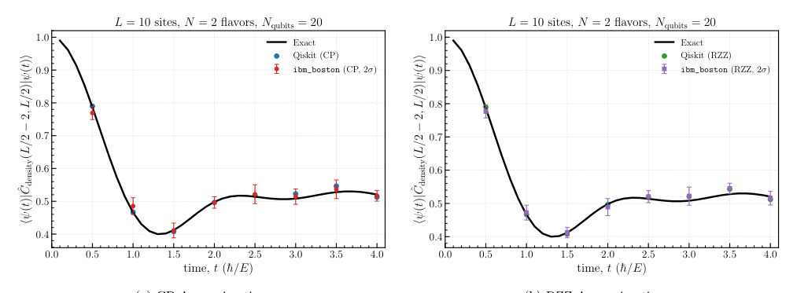
← Index · ← Previous · Next →
Authors: Huaijin Dong, Long Zhang
Type: theory · Category: disordered systems and neural networks · PDF: https://arxiv.org/pdf/2605.06075v1
Analysis basis: full PDF text, analyzed in chunks
Topic relevance: 🔥 entanglement & information structure 4/5 · 🔥 non-equilibrium dynamics 4/5 · non-equilibrium universality 2/5 · scars & prethermalization 2/5
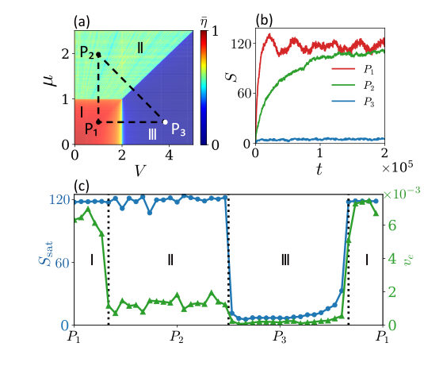
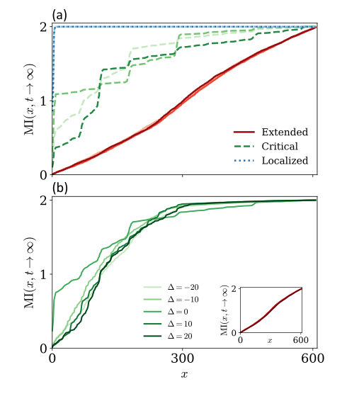
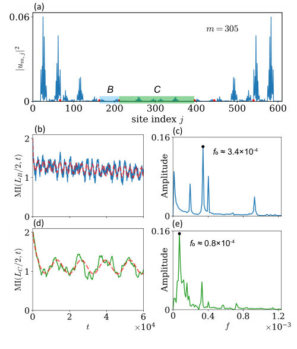
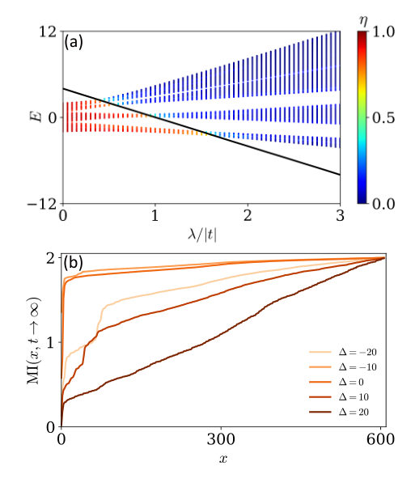
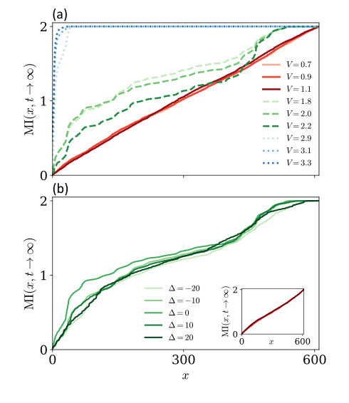
Summary. This paper proposes a new real-space probe called Subsystem Information Capacity (SIC) to characterize critical phases in quasiperiodic systems. It demonstrates that SIC can detect spatial fragmentation and 'subregion echoes' that global entanglement measures miss. This allows for a clear distinction between different types of localization and critical regimes.
Why it may be interesting. It provides a new, spatially resolved tool for probing the internal structure of multifractal states and transport bottlenecks, which is highly relevant for understanding non-equilibrium dynamics in disordered many-body systems.
Main problem. The difficulty of unambiguously identifying and characterizing critical phases in quasiperiodic systems, which are often indistinguishable from extended or localized phases using global measures like half-chain entanglement entropy.
Main result. The introduction of Subsystem Information Capacity (SIC) as a real-space diagnostic that reveals spatial heterogeneity, a stepwise ramp in steady-state profiles, and 'subregion echoes' caused by fragmentation in the critical phase.
Method. Numerical study of entanglement dynamics following a quantum quench from an unentangled product state, utilizing mutual information between a reference qubit and a subsystem.
Model / system. 1D Extended Harper Model, a quasiperiodic lattice featuring incommensurate on-site potential and modulated off-diagonal hopping terms.
Key observables. Subsystem Information Capacity (SIC), half-chain entanglement entropy, subregion echoes, and fractal dimension (MIPR).
Important parameters / regimes. Off-diagonal modulation amplitude (mu), on-site potential strength (V), and the incommensurate wave vector (beta).
Assumptions / limitations. The study focuses on 1D non-interacting systems and assumes the thermodynamic limit for phase definitions.
Figures summary. Figure 1 shows a phase diagram and entanglement evolution; Figure 5 demonstrates the SIC profile's sensitivity to the initial site position and its ability to distinguish between different localization scenarios.
Paper structure. The paper introduces the problem of critical phase identification, presents the SIC diagnostic, applies it to the Extended Harper Model to reveal fragmentation and subregion echoes, and then validates its generality across different localization mechanisms like the SPME and non-IDZ phases.
We systematically investigate the entanglement dynamics of quasiperiodic systems across their extended, critical, and localized phases, aiming to identify dynamical signatures that can clearly distinguish the critical phase from the other two. Focusing on the extended Harper model, we complement the half-chain entanglement entropy with the spatially resolved subsystem information capacity (SIC) and demonstrate that the critical phase exhibits a pronounced spatial heterogeneity that is absent in the extended and localized phases. In the steady state, the SIC reveals a stepwise ramp as a function of subsystem size, reflecting an underlying fragmentation of the chain into weakly connected subregions. Dynamically, information initially localized within such a subregion can undergo coherent long-lived oscillations, dubbed subregion echoes, whose period scales with the subregion length, in quantitative agreement with a quasiparticle picture of confined quasiparticle reflections. We trace this internal fragmentation to the incommensurately distributed zeros (IDZs) in the off-diagonal hopping terms of the Hamiltonian. To establish the generality of the SIC as a diagnostic tool, we further apply it to a mobility-edge phase with coexisting extended and localized states and to a critical phase that does not originate from IDZ fragmentation, and show that the SIC can cleanly distinguish these scenarios through their distinct steady-state profiles, initial-site sensitivities and the presence of subregion echoes. Our results establish the SIC as a powerful real-space probe for diagnosing critical phases and for uncovering the bottlenecked connectivity that underlies their multifractal structure.
Authors: Isita Chatterjee, Pegah Darvehi, Antonio Orsi, Anna Levochkina, Pasquale Mastrovito, Gwenel Le Gal, Arpit Ranadive, Giulio Cappelli, Alberto Porzio, Francesco Tafuri, Davide Massarotti, Martina Esposito
Type: experiment · Category: quantum information and computing · PDF: https://arxiv.org/pdf/2605.05830v1
Analysis basis: full PDF text, analyzed in chunks
Topic relevance: 🔥 QC/QI experiment 4/5 · 🔥 quantum optics experiment 4/5 · entanglement & information structure 2/5 · quantum measurements 2/5
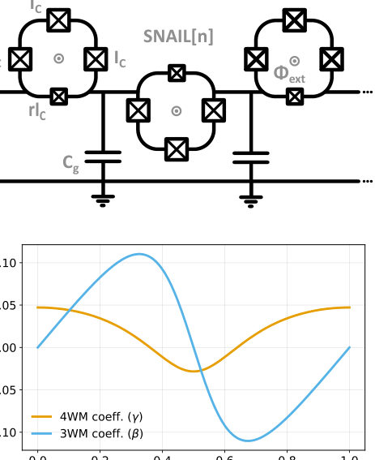
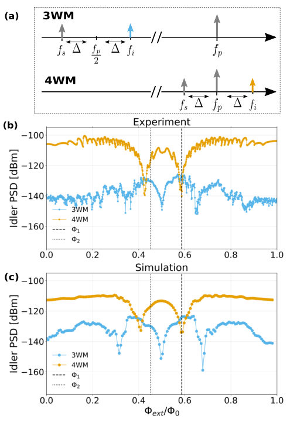
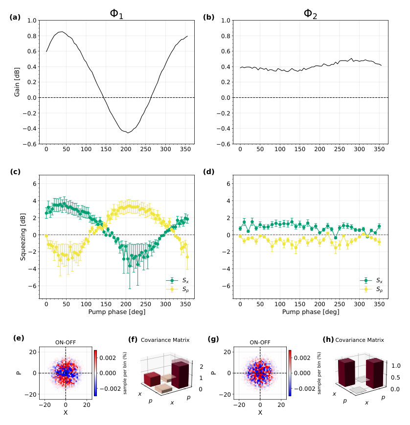
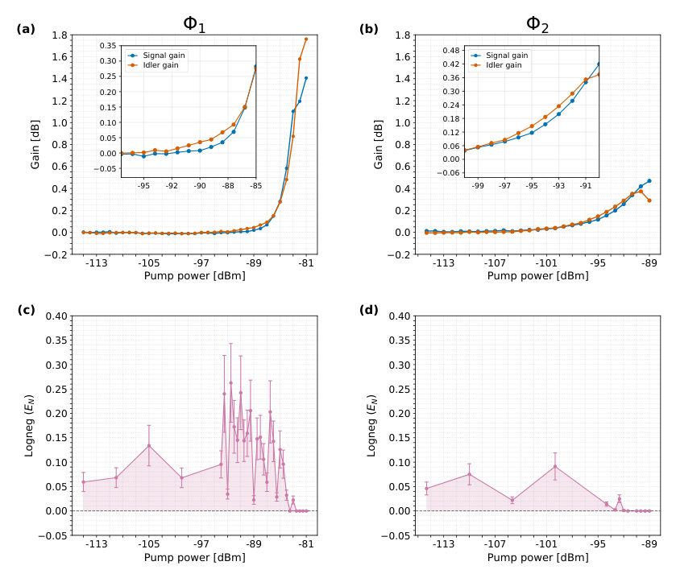
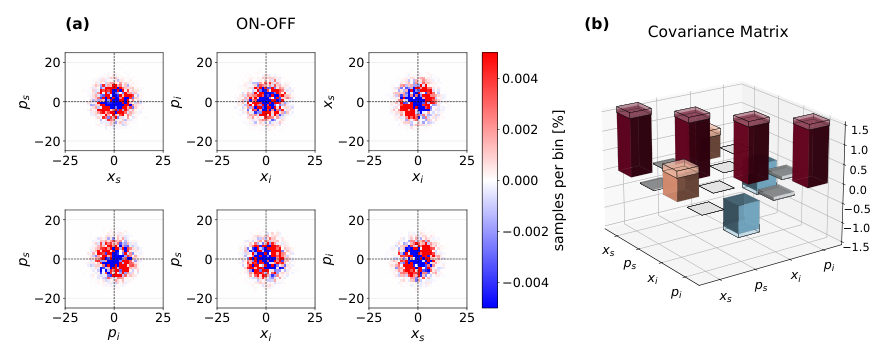
Summary. The researchers successfully demonstrated vacuum squeezing and entanglement generation in a SNAIL-based traveling-wave parametric amplifier by using flux tuning to suppress unwanted four-wave mixing. This approach allows for effective three-wave mixing, which simplifies the separation of pump and signal frequencies. The results provide a pathway for advancing broadband microwave squeezing for quantum sensing and information processing.
Why it may be interesting. This work is highly relevant to quantum optics and continuous-variable quantum information as it demonstrates a method to utilize residual nonlinearities for broadband squeezing and provides a strategy for easier pump filtering in microwave photonics.
Main problem. Investigating how competing three-wave mixing (3WM) and four-wave mixing (4WM) nonlinearities affect vacuum squeezing generation in a SNAIL-based Traveling-Wave Parametric Amplifier (TWPA).
Main result. Demonstrated that residual 3WM can be used for squeezing generation by optimizing the external magnetic flux to suppress 4WM, achieving single-mode squeezing of ~3 dB and generating entanglement.
Method. Experimental measurement of idler power spectral density and phase-dependent gain using a CW pump, combined with rigorous system gain calibration via a shot noise tunnel junction (SNTJ) and WRSPICE simulations.
Model / system. A Josephson Traveling-Wave Parametric Amplifier (JTWPA) consisting of 700 SNAIL unit cells with alternated magnetic flux polarity, operating in a superconducting circuit architecture.
Key observables. Idler power spectral density (PSD), phase-dependent signal gain, field quadrature variances (X and P), single-mode squeezing (SMS), and logarithmic negativity (E_N).
Important parameters / regimes. Pump frequency of 7.705 GHz, external magnetic flux (optimized at 0.59 Phi_0), and pump powers between -84 dBm and -91 dBm.
Assumptions / limitations. Assumes a 1 dB upper bound uncertainty for insertion loss and system gain estimation, leading to a conservative lower bound for reported squeezing and entanglement.
Figures summary. Fig 1: Device schematic and flux dependence of nonlinear coefficients; Fig 3: Comparison of squeezing/entanglement at different flux points; Fig 6: Experimental setup schematic; Fig 7: PSD as a function of SNTJ voltage for gain calibration.
Paper structure. The paper introduces the device physics of SNAIL-based TWPAs, details the experimental setup and calibration procedures, compares 3WM and 4WM regimes via flux tuning, and concludes with the demonstration of squeezing and entanglement.
Recent demonstrations of squeezing generation using Traveling Wave Parametric Amplifiers (TWPAs) have opened the way for the application of broadband microwave squeezing in quantum sensing, quantum-enhanced detection, and continuous-variable quantum information. Here we demonstrate vacuum squeezing generation via residual three-wave mixing (3WM) in a Josephson TWPA based on superconducting nonlinear asymmetric inductive elements (SNAILs) with alternated magnetic flux polarity. By investigating competition between four-wave mixing (4WM) and 3WM nonlinearities, we prove that vacuum squeezing generation via residual 3WM is possible when a careful choice of the operating flux point is adopted. Our study provides valuable insights on the impact of competing nonlinearities on TWPA squeezers, potentially extending the range of applications in the framework of microwave photonics.
Authors: Ansgar Pernice
Type: theory · Category: statistical mechanics · PDF: https://arxiv.org/pdf/2605.05417v1
Analysis basis: full PDF text, analyzed in chunks
Topic relevance: 🔥 quantum measurements 4/5 · methods for driven-dissipative 3/5 · measurement-induced transitions 2/5 · non-equilibrium dynamics 2/5
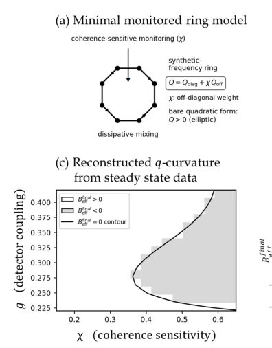
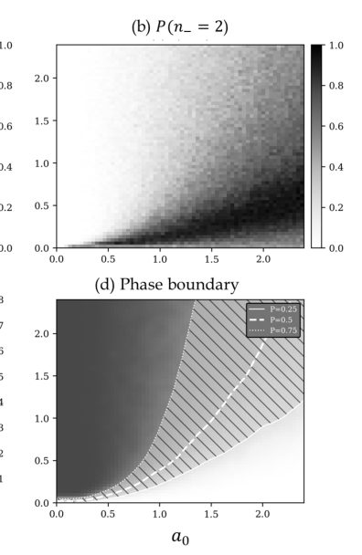
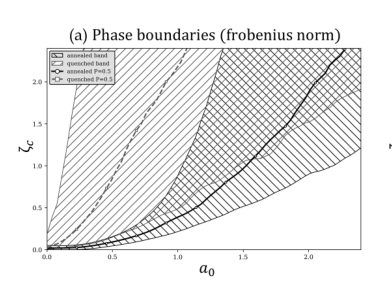
Summary. This paper demonstrates that Zeno-induced coarse-graining can break the positive-definiteness of quadratic response tensors in open quantum systems. It shows that the competition between Schur-induced compression and anisotropic perturbations organizes the system into distinct signature sectors. This mechanism is a robust structural consequence of eliminating fast degrees of freedom.
Why it may be interesting. It provides a fundamental insight into how coarse-graining and measurement backaction can fundamentally change the geometric and thermodynamic structure of effective dynamics, potentially leading to non-classical response signatures.
Main problem. Investigating how the structure of quadratic response tensors is modified under measurement-induced (Zeno) coarse-graining and whether the positive-definiteness of these tensors is preserved.
Main result. The elimination of fast degrees of freedom via the Zeno effect generates a subtractive renormalization that can induce negative eigenvalues in the effective response tensor, organizing the dynamics into distinct signature sectors.
Method. The study uses the Schur complement formalism applied to the GKSL master equation, combined with an effective flow analysis and numerical ensemble simulations of stochastic dynamics.
Model / system. Open quantum systems subject to continuous monitoring and time-scale separation, specifically those with dynamics that close linearly at the level of moments, such as the quantum linear Boltzmann equation (QLBE).
Key observables. Quadratic response tensors, effective drift matrices, local curvature of the probability density, and the number of negative eigenvalues (signature sectors).
Important parameters / regimes. The ratio of anisotropic perturbations to Schur-induced damping, the strength of coherence-sensitive coupling, and the time-scale separation between slow and fast sectors.
Assumptions / limitations. Assumes existence of time-scale separation, quadratic closure of the dynamics, and that the mobility operator is positive definite.
Figures summary. Figure 1 illustrates a synthetic photonic ring and the Zeno reduction process with a phase diagram; Figure 2 shows statistical distributions of signature sectors and first-passage times; Figure 3 compares phase boundaries under annealed versus quenched disorder.
Paper structure. The paper begins with an algebraic identification of the Schur-induced reduction, moves to a physical realization using coupled modes, develops an effective dynamical flow model, and concludes with a statistical characterization of the resulting signature sectors and their robustness.
Quadratic response tensors arise naturally in quantum kinetic descriptions, such as the quantum linear Boltzmann equation (QLBE), where they encode the coupled structure of drift and fluctuations beyond simple positive-definite forms. Motivated by this class of systems, we investigate how such response structures are modified under monitoring-induced coarse graining. Within the Gorini--Kossakowski--Sudarshan--Lindblad (GKSL) framework and under time-scale separation, Zeno elimination of fast degrees of freedom generates a subtractive renormalization with Schur-complement structure. As a result, positive definiteness of the response tensor is not preserved: coupling between slow and rapidly damped sectors can induce negative directions even when the microscopic tensor is strictly positive. We formulate a minimal effective flow capturing this mechanism and show that the competition between Schur-induced compression and anisotropic perturbations organizes the dynamics into distinct signature sectors. The resulting structure appears to be robust within the class of models considered and, in appropriate regimes, may be experimentally accessible. Our results establish a general framework for how quadratic response structures, as encountered in QLBE-type dynamics, are dynamically reorganized under Zeno-induced coarse graining.
Authors: András Grabarits, E. Medina-Guerra, Adolfo del Campo
Type: theory · Category: other · PDF: https://arxiv.org/pdf/2605.05290v1
Analysis basis: full PDF text, analyzed in chunks
Topic relevance: 🔥 entanglement & information structure 4/5 · 🔥 non-equilibrium dynamics 4/5 · scars & prethermalization 2/5
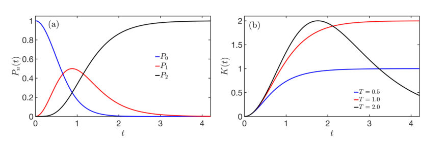
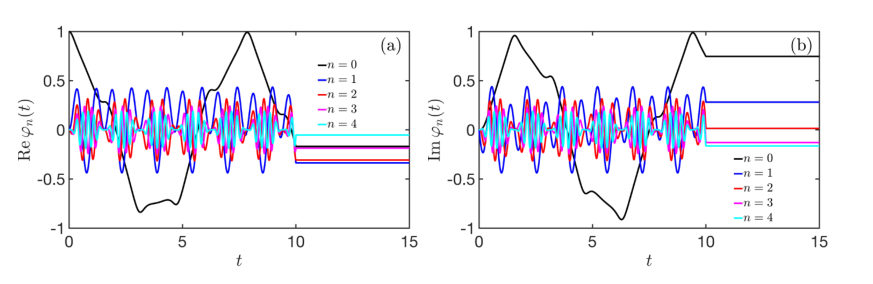
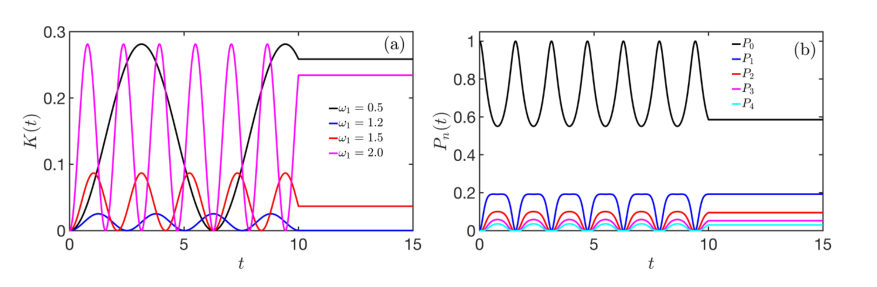
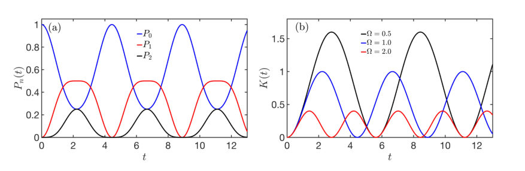
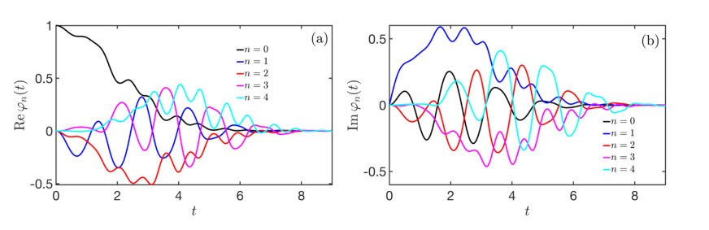
Summary. This paper develops a unified mathematical framework to calculate Krylov complexity and operator growth in quantum systems driven by time-dependent Hamiltonians. By leveraging Lie-algebraic structures, the authors provide exact solutions for various models and identify how temporal driving affects the fundamental limits of complexity growth.
Why it may be interesting. It provides exact analytical tools for understanding how driving and non-commuting Hamiltonians affect operator spreading and complexity, which is crucial for studying non-equilibrium dynamics in many-body systems and driven quantum technologies.
Main problem. Extending the Krylov subspace framework and the study of operator growth (Krylov complexity) from time-independent to explicitly time-dependent Hamiltonians.
Main result. The authors establish a unified Lie-algebraic framework that links time-dependent Krylov dynamics to the underlying algebraic structure, providing exact solutions for complexity growth and introducing a new quantum speed limit for time-dependent generators.
Method. The study utilizes Lie-algebraic constructions (using ladder operators and root systems), the Wei-Norman factorization method, and the mapping of dynamics to a 1D Lanczos chain/lattice.
Model / system. The framework applies to quantum systems with underlying Lie-algebraic structures, including su(2) and su(1,1) representations, the Heisenberg-Weyl algebra, the dilated harmonic oscillator, and spin in a rotating magnetic field.
Key observables. Krylov complexity, Krylov occupation probabilities, Lanczos coefficients (on-site and hopping terms), and the quantum speed limit (complexity growth rate).
Important parameters / regimes. The algebra type (sigma = +/- 1), lowest-weight eigenvalue (lambda), time-dependent coupling (gamma(t)), and pulse area (Theta).
Assumptions / limitations. The framework specifically targets systems with underlying Lie-algebraic structures and assumes the dynamics can be captured within a defined Krylov subspace.
Figures summary. Figure 1 shows probability weight transfer and complexity growth for su(4) pulses; Figure 2 illustrates the real and imaginary parts of the Krylov wavefunction during a frequency quench; Figure 3 displays complexity and occupation probabilities for su(1,1) and su(2) systems.
Paper structure. The paper begins by establishing the link between time-dependent dynamics and Lie algebras, develops the mathematical framework using Wei-Norman factorization and the interaction picture, applies this to specific algebraic models (su(2), su(1,1), Heisenberg-Weyl), and concludes by introducing a new quantum speed limit for complexity growth.
We study quantum dynamics generated by time-dependent Hamiltonians in Krylov space, the minimal subspace in which the evolution takes place. We establish a direct link between dynamics in the time-dependent Krylov subspace and the underlying Lie-algebraic structure of the Hamiltonian. We develop a general framework in which the dynamics in the time-dependent Krylov subspace is generated by ladder operators of the associated Lie algebra. In particular, we identify the minimal conditions under which the exact time-dependent Krylov dynamics is naturally determined by the interaction-picture Hamiltonian and governed by an embedded $\mathfrak{sl}(2,\mathbb{C})$ subalgebra. We further show that an exact single-exponential representation of the time-evolution operator gives rise to a distinct time-independent Krylov dynamics in a unitarily related basis, from which the exact time-dependent Krylov dynamics can nevertheless be recovered. We also extend the framework to the oscillator algebra as the simplest extension of the nilpotent Heisenberg--Weyl algebra, and provide further examples, including the translated and dilated harmonic oscillator, systems governed by closed Virasoro subalgebras, a spin in a rotating magnetic field, and higher-dimensional generalizations for multi-level systems. In addition, we introduce a new quantum speed limit to the complexity growth rate generated by a time-dependent generator and show that, for evolutions governed by a Lie algebra, it retains the same functional form as in the time-independent case. Remarkably, saturation of this bound is strongly affected by temporal driving and persists only when the Hamiltonian commutes with itself at different times. These results establish a unified framework for characterizing operator growth and Krylov complexity in time-dependent quantum systems with underlying Lie-algebraic structures.
Authors: Manuel John, Keshav Pareek, Peter Tirler, Tim Gollerthan, Michael Meth, Lukas Gerster, Peter Zoller, Daniel González-Cuadra, Torsten V. Zache, Martin Ringbauer
Type: both · Category: other · PDF: https://arxiv.org/pdf/2605.05841v1
Analysis basis: full PDF text, analyzed in chunks
Topic relevance: 🔥 QC/QI experiment 4/5 · analog quantum simulation 3/5 · non-equilibrium dynamics 3/5
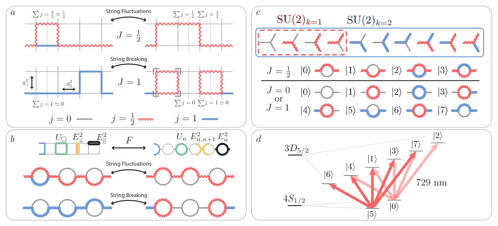
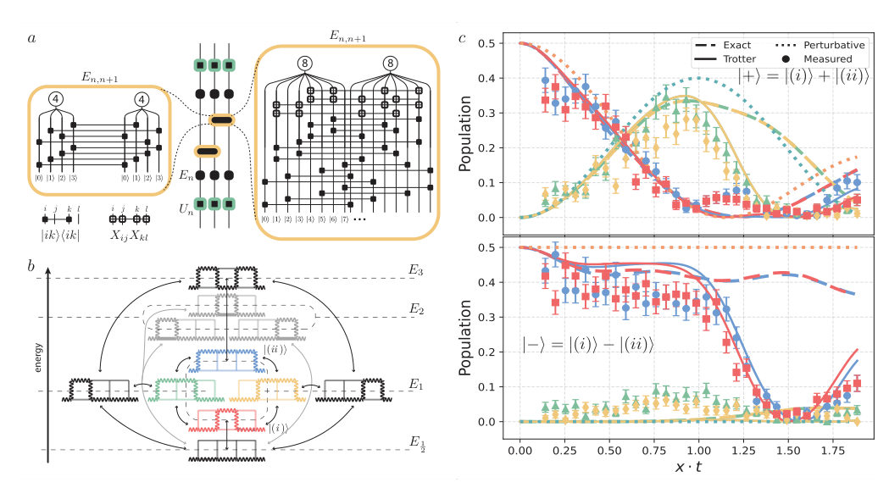
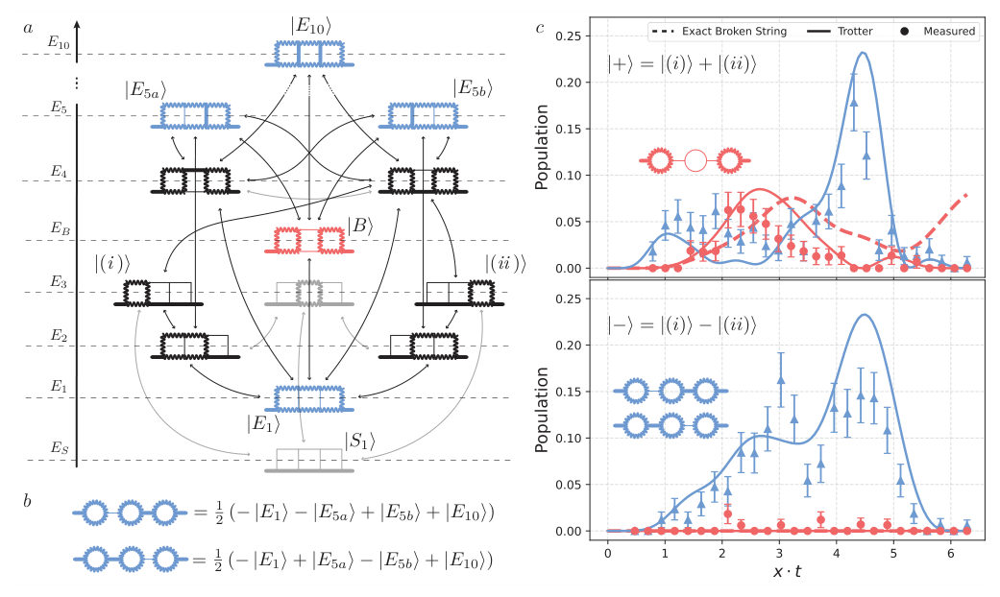
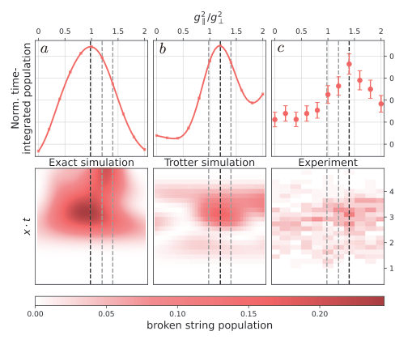
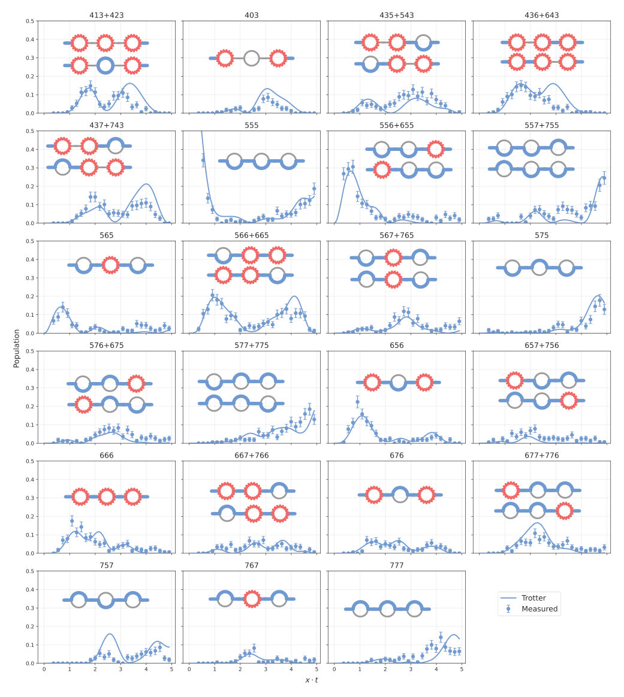
Summary. This paper reports the first quantum simulation of non-Abelian string breaking using a trapped-ion qudit computer. By using a hardware-optimized encoding, the researchers successfully observed how gauge-field self-interactions drive the breaking of flux strings. This work highlights the potential of qudit-based quantum computing for accessing complex dynamics in lattice gauge theories.
Why it may be interesting. It demonstrates a highly efficient way to use the large internal Hilbert space of ions (qudits) to simulate complex gauge theories, providing a blueprint for studying non-perturbative high-energy physics using AMO platforms.
Main problem. Simulating the real-time, non-perturbative dynamics of non-Abelian string breaking in SU(2) lattice gauge theory, which is classically challenging due to gauge-field self-interactions.
Main result. The first quantum simulation of genuine non-Abelian string breaking was achieved on a trapped-ion computer, demonstrating that gauge-field interactions can drive string breaking even without dynamical matter.
Method. Digital Trotter dynamics were implemented using a hardware-efficient qudit encoding on a trapped-ion platform, utilizing F-moves to map plaquette interactions to single-qudit operators.
Model / system. A pure SU(2) lattice gauge theory in a quasi-1D ladder geometry implemented using a chain of three 40Ca+ ions, where the gauge fields are encoded in the qudit Hilbert space (up to d=8) using an SU(2)k truncation.
Key observables. Real-time populations of string configurations, string oscillations, and the production of gluonic excitations (gluelumps).
Important parameters / regimes. Gauge coupling constants (g_parallel, g_perpendicular), plaquette interaction strength (x), and the flux sectors (fundamental J=1/2 and adjoint J=1).
Assumptions / limitations. The infinite-dimensional gauge field is truncated using an SU(2)k regularization; the simulation assumes a small system size and is subject to Trotter errors and experimental gate imperfections.
Figures summary. Fig 1: Illustration of string dynamics and the qudit encoding/F-move basis. Fig 2: Trotter circuit and dynamics in the unbreakable J=1/2 sector. Fig 4: Tunable resonance of string breaking in the J=1 sector. Fig 5-6: Comparison of qudit-native vs. qubit-embedded efficiency and error scaling.
Paper structure. The paper introduces the problem of non-Abelian string breaking, describes the hardware-efficient qudit encoding and SU(2)k truncation, presents experimental results for both unbreakable and breakable string sectors, analyzes the resonance of string breaking, and concludes with a performance comparison between qudit and qubit implementations.
Gauge theories form the foundation of the Standard Model of particle physics. These theories can exhibit confinement, where charged particles only occur in bound states, connected by flux strings whose energy grows linearly with separation. Simulating the real-time dynamics of such strings, including their breaking, remains a major challenge for classical computations and a promising target for quantum simulations. While recent quantum simulation experiments explored string-breaking dynamics in abelian lattice gauge theories, non-abelian theories are qualitatively distinct because gauge fields themselves carry charge. Here, we report the first quantum simulation of genuine non-abelian string-breaking dynamics in a pure SU($2$) lattice gauge theory, where gauge-field self-interactions drive string breaking even in the absence of dynamical matter. Our results are obtained on a trapped-ion quantum computer, using native qudit Hilbert spaces to encode truncated gauge fields on a ladder geometry and implement digital Trotter dynamics. We experimentally study unbreakable and breakable strings generated by fundamental and adjoint static charges, respectively. We locally resolve string oscillations and coherent string breaking through the creation of gluonic excitations driven by non-abelian plaquette interactions. Our work establishes hardware-efficient, problem-tailored qudit simulations as a promising route for accessing non-perturbative dynamics relevant to high-energy physics.
Authors: Talal Ahmed Chowdhury, Seokwon Choi, Kyoungchul Kong, Kwangmin Yu
Type: both · Category: quantum information and computing · PDF: https://arxiv.org/pdf/2605.05479v1
Analysis basis: full PDF text, analyzed in chunks
Topic relevance: 🔥 QC/QI experiment 4/5 · entanglement & information structure 3/5 · non-equilibrium dynamics 3/5




Summary. This paper introduces a new approximation method, LDOA, to efficiently simulate the real-time dynamics of the multi-flavor Gross-Neveu model on superconducting quantum computers. By reducing the circuit depth required for complex fermion interactions, the researchers achieved large-scale simulations involving over 100 qubits that match classical results. This work provides a scalable framework for studying interacting field theories on NISQ-era hardware.
Why it may be interesting. It demonstrates a scalable pathway for simulating interacting quantum field theories on near-term hardware by using hardware-aware circuit compression and rigorous mathematical approximations to manage complexity.
Main problem. Simulating the real-time dynamics of the multi-flavor Gross-Neveu model on superconducting quantum processors is hindered by high circuit depth and gate overhead caused by long-range quartic interactions.
Main result. The development of the Localized Diagonal Operator Approximation (LDOA) significantly reduces two-qubit gate counts and circuit depth, enabling large-scale simulations on up to 108 qubits with strong agreement against classical benchmarks.
Method. The authors use a hardware-efficient Trotterization scheme combined with LDOA, which reformulates diagonal unitary synthesis as a structured least-squares problem using the Moore-Penrose pseudoinverese, alongside quantum error mitigation techniques like ZNE and Pauli Twirling.
Model / system. The study focuses on the 1+1 dimensional multi-flavor Gross-Neveu model, a theory of N flavors of Dirac fermions with quartic interactions, implemented on IBM superconducting quantum processors.
Key observables. Density-density correlation functions, second-order Renyi entropy, and purity.
Important parameters / regimes. Number of fermion flavors (N), lattice size (L), coupling constant (g), and Trotter time-step (delta t).
Assumptions / limitations. The method assumes a hardware architecture with limited qubit connectivity and utilizes the Kogut-Susskind lattice fermion prescription for discretization.
Figures summary. Circuit diagrams for different flavor numbers (N=2, 3, 4); geometric interpretation of the least-squares projection; comparison of CP and RZZ-based Ansätze; and time-evolution plots of density-density correlations and Renyi entropy comparing hardware, noiseless simulation, and classical benchmarks.
Paper structure. The paper introduces the physical model and the challenge of long-range interactions, presents the LDOA mathematical framework and circuit design, details the experimental implementation on IBM hardware, provides validation against classical methods (ED and MPS-TDVP), and discusses error mitigation and scalability.
We present a scalable quantum simulation framework for real-time dynamics of the multi-flavor Gross-Neveu model in 1+1 dimensions. Using superconducting quantum processors at utility scale, we develop a hardware-efficient Trotterization whose per-step circuit depth scales with fermion flavor number rather than total system size, enabling simulations beyond 100 qubits. A central contribution of this work is the Localized Diagonal Operator Approximation (LDOA), which systematically reduces the overhead associated with quartic interactions. We formulate diagonal unitary synthesis as a structured least-squares problem in phase space and obtain analytic solutions via the Moore-Penrose pseudoinverse. This formulation provides a principled and quantitatively controlled approximation: in the small Trotter-step regime, the unitary error is directly linked to the phase reconstruction error and vanishes asymptotically as the Trotter step size decreases. This establishes a clear mathematical foundation for the LDOA while significantly reducing two-qubit gate counts and circuit depth, and is broadly applicable to diagonal quantum operators with long-range structure, making it particularly well suited for quantum hardware with limited qubit connectivity. Using these techniques, we run large-scale simulations on IBM superconducting processors and study real-time observables, including density-density correlators. We benchmark against exact diagonalization and tensor network-based methods, finding strong agreement across system sizes. These results show that combining hardware-aware circuit design with rigorous approximations enables practical near-term simulation of interacting fermionic field theories and provides a scalable pathway toward more complex quantum field theory simulations.
Authors: Joshua Bader, Shin-ichiro Sato, Jeffrey C. McCallum, Ruixuan Wang, Shao Qi Lim, Alexey Lyasota, David Broadway, Brett C. Johnson, Sven Rogge, Qing Li, Stefania Castelletto
Type: experiment · Category: quantum information and computing · PDF: https://arxiv.org/pdf/2605.05815v1
Analysis basis: full PDF text, analyzed in chunks
Topic relevance: 🔥 QC/QI experiment 4/5 · 🔥 quantum optics experiment 4/5 · spintronics-quantum-optics interface 2/5
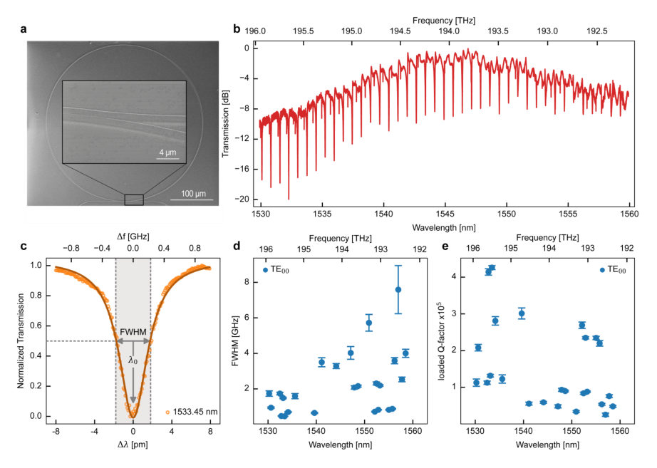
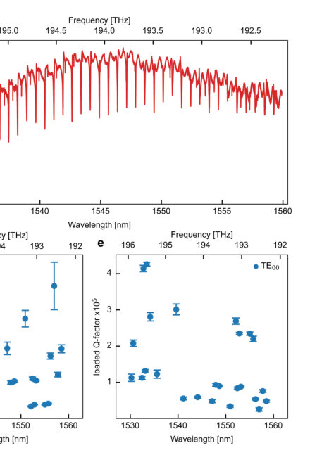
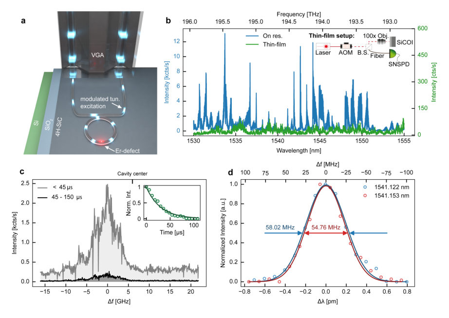
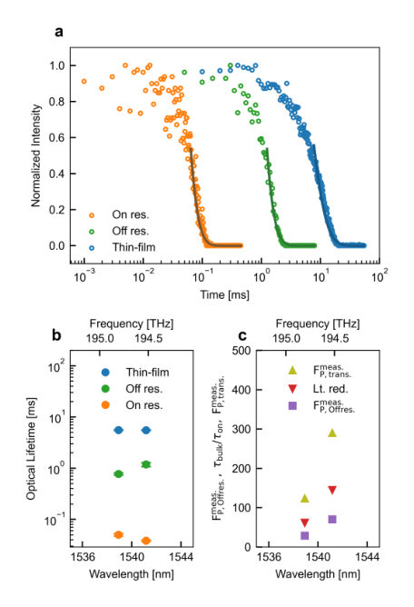
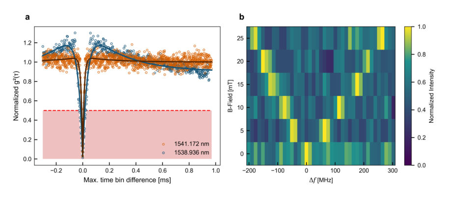
Summary. This paper demonstrates the first instance of single Er3+ ion emission in a microring resonator operating at room temperature. By using a silicon-carbide-on-insulator platform, the authors achieved a 70-fold Purcell enhancement and high-purity single-photon emission. This provides a promising path toward scalable, integrated quantum networks compatible with existing fiber-optic infrastructure.
Why it may be interesting. This work is highly relevant to quantum optics and open quantum systems as it demonstrates significant Purcell enhancement and coherent control (Zeeman splitting) of a spin-photon interface at room temperature, which is a major milestone for scalable quantum networks.
Main problem. The difficulty in realizing efficient, scalable spin-photon interfaces in the telecommunication C-band due to the low photon-emission rate and the requirement for cryogenic temperatures in Erbium (Er3+) systems.
Main result. Demonstrated room-temperature single-photon emission from Er3+ ions in a 4H-SiCOI microring resonator with a ~70x Purcell enhancement and high single-photon purity.
Method. The researchers used ion implantation of Er3+ into 4H-SiCOI, followed by fabrication of microring resonators, and characterized the system using photoluminescence excitation (PLE) spectroscopy, lifetime measurements, and photon correlation (g2) analysis.
Model / system. The experimental platform consists of 4H-silicon-carbide-on-insulator (4H-SiCOI) microring resonators containing implanted Er3+ ions, operating in the telecommunication C-band.
Key observables. Purcell enhancement factor, Q-factor, spectral diffusion, g2(0) (single-photon purity), Zeeman splitting (g-factor), and optical lifetime reduction.
Important parameters / regimes. Room temperature operation, wavelength ~1533 nm, loaded Q-factor of ~4.26 x 10^5, Purcell enhancement of ~69.8, and spectral diffusion of ~54.76 MHz.
Assumptions / limitations. Assumed a branching ratio of 0.5 for calculating Purcell enhancement and lifetime reduction factors.
Figures summary. Figure 1 shows the SEM image and spectral transmittance of the microring; Figure 2 details the experimental setup and PLE spectra; Figure S5-S10 include Lorentzian fits, Er-dose comparisons, and lifetime-dependent PLE data.
Paper structure. The paper introduces the problem of telecom-band spin-photon interfaces, describes the 4H-SiCOI platform and fabrication, presents the characterization of the resonator and Er3+ emitters, quantifies Purcell enhancement and single-photon purity, demonstrates Zeeman splitting, and concludes with a comparison to existing technologies.
Spin-carrying single-photon emitters operating in the telecommunication C-band (1530-1565nm) are prime candidates for integrated spin-photon interfaces, offering seamless compatibility with existing fiber-optic infrastructure, an essential component for future quantum networks. In this context, erbium-dopants ($\text{Er}^{3+}$) are particularly compelling due to their exceptional emitter properties, including small spectral diffusion and long spin coherence times. However, their low C-band photon-emission rate and operation at cryogenic temperatures has limited the realization of this technology. In this work, we demonstrate fully integrated single-photon emission from an ion implanted $\text{Er}^{3+}$-embedded into a 4H-silicon-carbide-on-insulator (4H-SiCOI) microring resonator operating at room temperature. By optimizing the mode overlap between the resonator and the $\text{Er}^{3+}$-defect, we achieved a $\sim$70$\times$ Purcell enhancement and recorded small spectral diffusion of $\sim$54 MHz. We further characterize the $\text{Er}^{3+}$ single photon emission via photon correlation g$^{(2)}$-histograms and investigate its performance under varying magnetic-field, demonstrating Zeeman splitting on single emitters.
Authors: Sahil D. Patel, Sean Doan, Luka Jevremovic, Kamyar Parto, Galan Moody
Type: both · Category: quantum information and computing · PDF: https://arxiv.org/pdf/2605.05721v1
Analysis basis: full PDF text, analyzed in chunks
Topic relevance: 🔥 quantum optics experiment 4/5 · QC/QI experiment 3/5 · interference shaping light 2/5
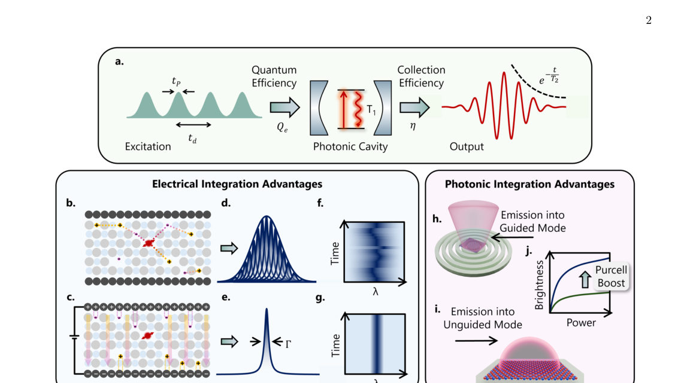
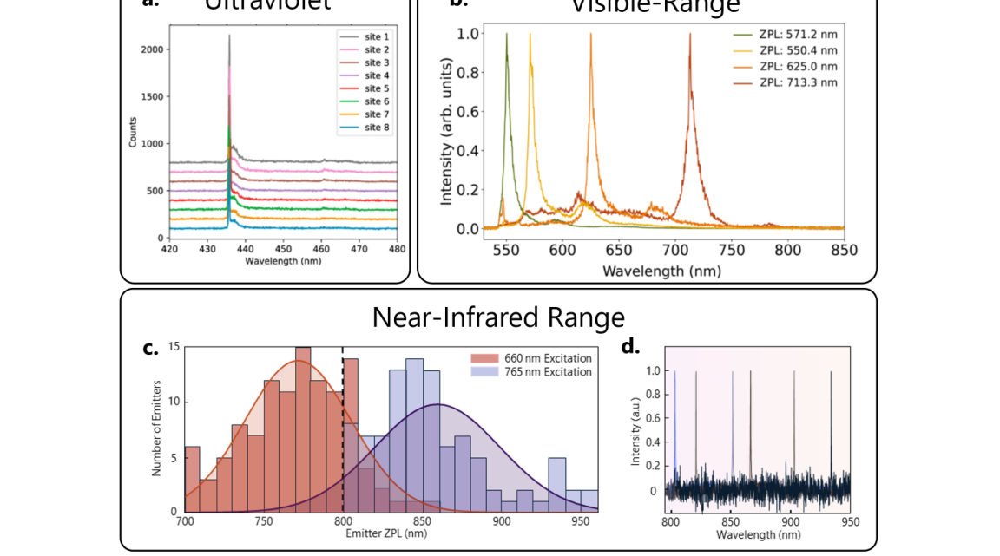
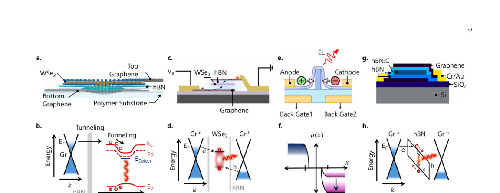
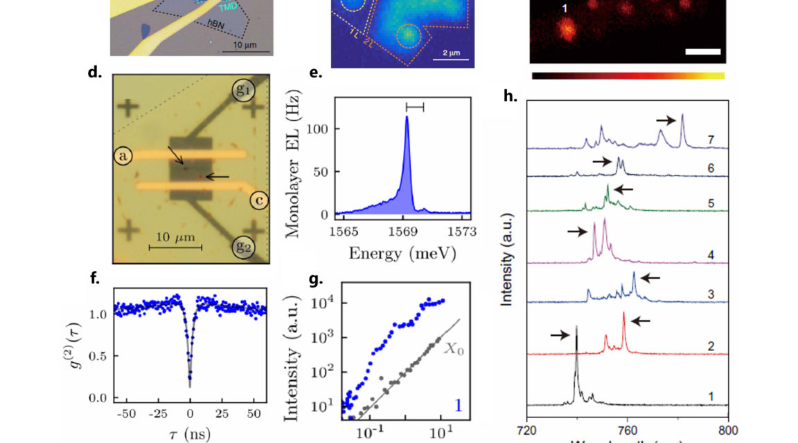
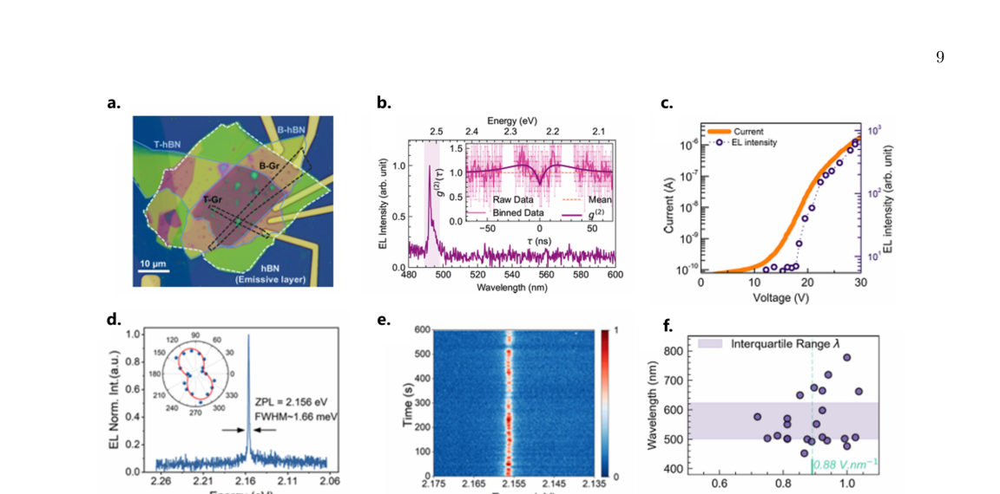
Summary. This review examines how integrating electronic and photonic components into 2D materials can transform single quantum emitters into scalable, 'turnkey' quantum light sources. It highlights how electrical control can stabilize spectral noise while photonic structures can maximize photon collection. The work emphasizes that co-designing these two domains is essential for practical quantum information processing.
Why it may be interesting. It addresses the fundamental engineering of light-matter interfaces and the control of decoherence (charge noise) in solid-state systems, which is critical for developing scalable quantum networks and cavity QED-like architectures in 2D materials.
Main problem. Current solid-state single-photon sources rely on bulky, non-scalable laboratory setups and suffer from spectral instability and low collection efficiency, preventing their use in large-scale quantum photonic networks.
Main result. The paper argues that the path to scalable quantum light engines lies in the intentional co-design of electronic integration (to stabilize and tune emitters) and photonic integration (to enhance brightness and extraction efficiency).
Method. The authors review recent progress in using electrostatic gating, electrical injection, and strain engineering for electronic control, alongside waveguide and resonator integration for photonic mode engineering in 2D materials.
Model / system. The review focuses on single quantum emitters in two-dimensional materials, specifically localized excitons in transition metal dichalcogenides (TMDs) like WSe2 and defect-based color centers in hexagonal boron nitride (hBN).
Key observables. Single-photon purity (g2(0)), brightness, photon indistinguishability, spectral linewidth, radiative lifetime (T1), coherence time (T2), and Purcell enhancement.
Important parameters / regimes. Spectral wandering, charge-noise-induced broadening, Stark tuning ranges, and extraction efficiency.
Assumptions / limitations. The review assumes that the transition from stochastic, randomly generated emitters to designed, deterministic sites is the necessary next step for scalability.
Figures summary. Figure 1 illustrates the impact of charge noise and the benefits of gated architectures and photonic confinement; Figure 2 shows the spectral diversity of hBN defects; Figure 3 details various electrical injection architectures like vertical and lateral junctions; Figure 11 shows proposed integrated electronic-photonic stacks.
Paper structure. The paper begins by defining the scalability bottleneck, then reviews electronic integration strategies (injection, gating, tuning), followed by photonic integration (waveguides, resonators), and concludes by proposing a co-design framework for integrated architectures.
Single-photon sources that are bright, pure, and interference-ready are essential for quantum communication and photonic quantum information processing, but many solid-state platforms still rely on bulky optical excitation, careful alignment, and post-selection to achieve useful linewidth, stability, and brightness. Scalable quantum photonics instead requires turnkey quantum-light engines that can be triggered on demand, stabilized against environmental noise, and efficiently interfaced with fibers or photonic circuits. This review surveys recent progress in electronic and photonic integration of single quantum emitters in two-dimensional materials, focusing on localized excitonic emitters in transition metal dichalcogenides and defect-based color centers in hexagonal boron nitride. On the electronic side, we discuss electrical injection, fast modulation, electrostatic stabilization, and Stark tunability as routes to suppress blinking, spectral wandering, and charge-noise-induced broadening. On the photonic side, we review waveguide and resonator platforms that funnel emission into well-defined optical modes and, in some cases, enhance radiative rates through the Purcell effect. We connect these integration strategies to key source metrics, including single-photon purity, brightness, spectral stability, and photon indistinguishability. We conclude that the next stage of progress will depend on co-designed electronic and photonic architectures that jointly optimize on-demand operation, stabilization, tunability, and packaging-compatible optical interfacing.
Authors: Gayathri G T, Gururaj Kadiri
Type: theory · Category: quantum information and computing · PDF: https://arxiv.org/pdf/2605.06566v1
Analysis basis: full PDF text, analyzed in chunks
Topic relevance: 🔥 interference shaping light 4/5 · analog quantum simulation 2/5 · entanglement & information structure 1/5 · non-equilibrium dynamics 1/5
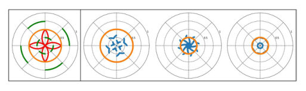
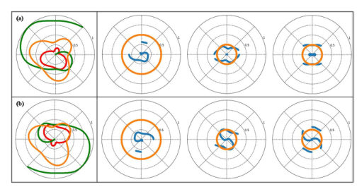
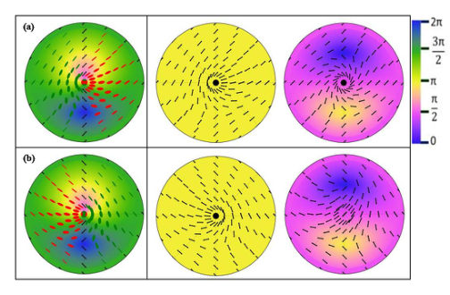
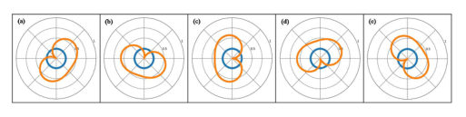
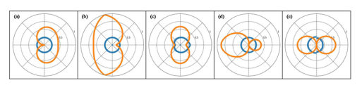
Summary. This paper introduces a unified SU(2) mathematical framework for designing optical elements that can precisely transform the polarization and phase of light. It demonstrates that these elements can be used to create complex structured light beams and can even simulate multi-step quantum walks in a single optical step.
Why it may be interesting. It provides a direct mapping between classical structured light manipulation and quantum information processing, specifically showing how polarization can act as an ancilla to implement quantum channels and instantaneous quantum walks on the OAM degree of freedom.
Main problem. Designing a unified framework for controlling both phase and polarization degrees of freedom to implement complex beam shaping and vector beam transformations.
Main result. The authors establish a constructive SU(2) framework that allows for the design of doubly-inhomogeneous waveplates (d-plates) to implement arbitrary transformations, including the realization of instantaneous quantum walks on the orbital angular momentum degree of freedom.
Method. The study uses SU(2) group theory and Pauli operators to formulate spatially varying transformations, deriving closed-form solutions for waveplate retardance and orientation.
Model / system. The physical platform consists of birefringent optical elements, specifically d-plates and q-plates, acting on light fields with both polarization (spin) and orbital angular momentum (OAM) degrees of freedom.
Key observables. State of Polarization (SoP), Orbital Angular Momentum (OAM) spectrum, Stokes vectors, and complex-electric field distributions.
Important parameters / regimes. Retardance (Gamma), fast-axis orientation (alpha), rotation axis (k), and topological charge (m).
Assumptions / limitations. The transformations are assumed to be unitary (no intensity loss), and the rotation axis for standard waveplates is restricted to the X-Y plane.
Figures summary. Figures show polar plots of SU(2) parameters, the construction of skyrmion Full Poincare Beams, and the generation of specific angle states and OAM distributions.
Paper structure. The paper begins by defining the SU(2) mathematical framework for polarization and OAM, progresses to the constructive design of d-plates and waveplate sequences, demonstrates applications in complex beam shaping and Full Poincare Beams, and concludes by linking these operations to quantum walk dynamics.
We present a constructive framework for designing transformations between structured light fields using birefringent optical elements, formulated in terms of SU(2) operations on polarization. Within this framework, transformations between vector beams are treated as spatially varying SU(2) operations, leading to a direct procedure for designing doubly inhomogeneous waveplates (d-plates) that implement the desired mapping. We identify a condition under which a single element implements a prescribed transformation exactly, including the global phase, and provide an explicit prescription for constructing the corresponding doubly inhomogeneous waveplate (d-plate) when this condition is satisfied, along with its realization using a finite sequence of singly inhomogeneous plates, including a QHQ configuration. Within this formulation, a broad class of problems in structured light can be treated within a single framework, including vector beam transformations, spin-orbital dynamics, and complex beam shaping. Crucially, the same SU(2) operations directly realize quantum channels on the orbital angular momentum degree of freedom, with polarization serving as a physical ancilla. These results establish a unified and explicitly constructive route to complex beam shaping and vector beam transformations based on SU(2) parameter synthesis, and provide a systematic foundation for designing next-generation photonic elements for structured light and spin-orbit information processing.
Authors: Yi Zhou
Type: theory · Category: strongly correlated electrons · PDF: https://arxiv.org/pdf/2605.05894v1
Analysis basis: full PDF text, analyzed in chunks
Topic relevance: 🔥 Keldysh / 2PI / non-Gaussian methods 4/5 · 🔥 non-equilibrium dynamics 4/5
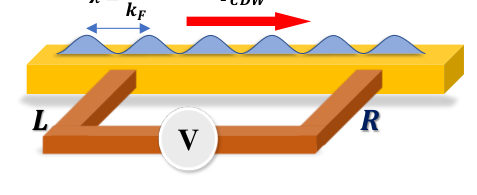
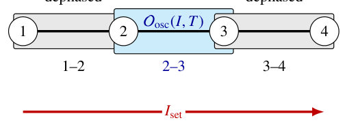
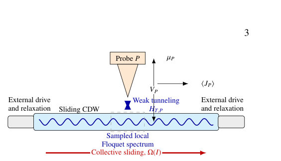
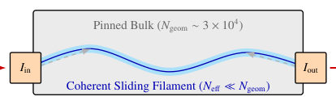
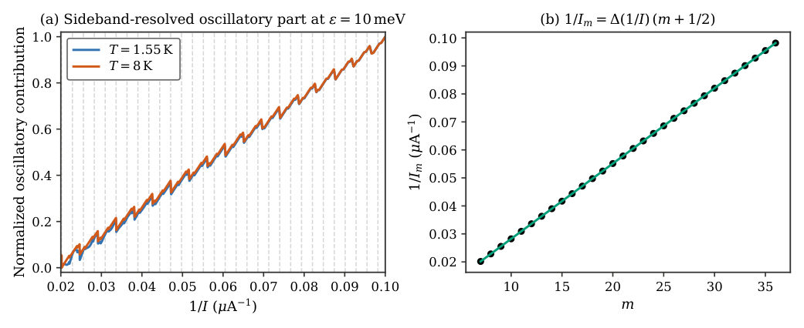
Summary. This paper provides a theoretical framework to explain 1/I quantum oscillations in sliding charge-density waves as a result of intrinsic Floquet sideband generation. It reveals that the observed oscillations imply conduction through highly localized coherent filaments and offers a new paradigm for creating intrinsically driven quantum devices.
Why it may be interesting. This paper is interesting because it demonstrates a universal mechanism for spatial-to-temporal conversion and the generation of intrinsic high-frequency Floquet states without external radiation, which is highly relevant to the study of driven many-body dynamics and the engineering of intrinsic quantum drives.
Main problem. The paper aims to explain the origin of 1/I (inverse-current) quantum oscillations observed in quasi-one-dimensional charge-density wave (CDW) insulators and to understand how a sliding CDW acts as an intrinsic dc-to-ac converter.
Main result. The authors demonstrate that a sliding CDW generates a Floquet sideband ladder, where 1/I oscillations arise from the periodic crossing of these sidebands with the probe chemical potential. They also show that the current must flow through a highly localized coherent filament (N_eff << N_geom) and that dephasing near contacts suppresses oscillation visibility in multi-terminal setups.
Method. The study uses Floquet theory and the Schwinger-Keldysh Green's function formalism to solve the time-dependent Schrödinger equation for a sliding CDW. They employ a segmented multi-terminal model and a weak-probe tunneling spectroscopy approach to simulate transport observables.
Model / system. The system is a quasi-1D charge-density wave (CDW) insulator in a sliding state. The model uses a single-band, two-branch mean-field Hamiltonian and treats the sliding phase as a time-dependent density modulation that creates a Floquet spectrum.
Key observables. Differential conductance (dI/dV), probe current, terminal-pair voltages (V_p-q), and the Floquet spectral function.
Important parameters / regimes. Sliding frequency (Omega), CDW gap (Delta), effective channel number (N_eff), contact mismatch (epsilon), and temperature (T).
Assumptions / limitations. The CDW is treated as a fully gapped insulator to minimize inelastic dephasing; the system is modeled in the weak-probe limit for spectroscopy; and the current is assumed to be driven through a localized coherent filament.
Figures summary. Fig 1 shows a schematic of a sliding-CDW device; Fig 2 illustrates a segmented multi-terminal model; Fig 3 displays the Floquet spectral function with split gap edges; Fig 8 shows the oscillatory kernel in inner vs. outer terminal voltages.
Paper structure. The paper begins by introducing the problem of 1/I oscillations, then develops the Floquet Hamiltonian and exact solution for a sliding CDW. It proceeds to model tunneling spectroscopy and multi-terminal transport, compares theoretical predictions to experimental parameters (like N_eff), and concludes with a discussion on the spatial-to-temporal conversion mechanism.
The realization of intrinsic, tunable high-frequency quantum states without external radiation is a major goal in condensed matter physics and quantum device engineering. Here, we demonstrate that a uniformly sliding charge-density wave (CDW) acts as an intrinsic dc-to-ac converter, transforming spatial periodicity into temporal periodicity to realize a unique periodically driven quantum state. We show that the isolated sliding-CDW problem is exactly solvable in Floquet form, yielding split gap edges and a ladder of Floquet sidebands. Using this exact solution, we reveal that weak-probe tunneling spectroscopy naturally yields an inverse-current ($1/I$) oscillation as a fixed-bias cut of the sideband ladder. Matching the observed oscillation period to theory indicates that the macroscopic current must percolate through a highly localized coherent filament, with an effective channel number orders of magnitude smaller than the geometric chain count. Furthermore, using a segmented multiterminal model, we demonstrate that inelastic phase-slip dephasing near the contacts explains the strong suppression of oscillation visibility on outer voltage probes. Ultimately, our results provide a rigorous transport interpretation of the striking $1/I$ quantum oscillations recently observed in quasi-one-dimensional CDW insulators. More broadly, they highlight a universal spatial-to-temporal conversion mechanism where the insulating gap protects Floquet coherence, offering a novel paradigm for intrinsically driven quantum devices.
Authors: Stefano Longhi
Type: theory · Category: other · PDF: https://arxiv.org/pdf/2605.05827v1
Analysis basis: full PDF text, analyzed in chunks
Topic relevance: 🔥 non-equilibrium dynamics 4/5 · correlated / nonlocal dissipation 2/5 · methods for driven-dissipative 2/5
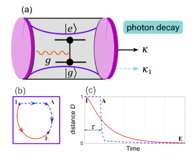
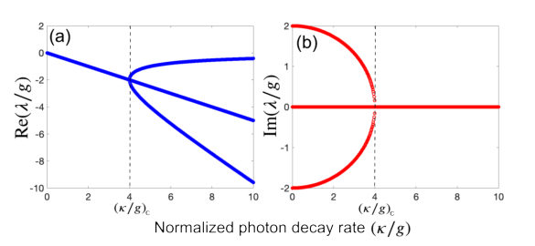
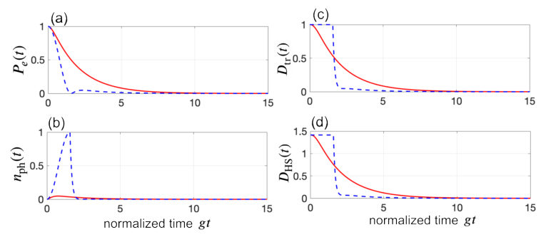
Summary. This paper proposes a realization of the quantum Pontus-Mpemba effect in cavity QED, where a sudden change in the cavity loss rate allows a system to reach equilibrium faster than continuous dissipation. The effect works by selectively populating fast-decaying modes of the system and is shown to be robust in realistic experimental conditions.
Why it may be interesting. It provides a novel way to engineer non-equilibrium relaxation in open quantum systems by using controlled dissipation quenches to bypass slow relaxation modes, which is highly relevant for controlling state preparation in circuit QED and cavity QED.
Main problem. Investigating the quantum Pontus-Mpemba effect, where a two-step relaxation protocol involving a sudden quench of dissipation achieves equilibrium faster than a single-step constant-dissipation process.
Main result. The study demonstrates that a sudden quench of the cavity decay rate can accelerate relaxation by using the first stage to steer the system into a state with high overlap with fast-decaying Liouvillian modes, a phenomenon that is robust against detuning, spontaneous emission, and thermal excitations.
Method. The authors use the Lindblad master equation and eigenmode analysis of the Liouvillian superoperator (dynamical matrix) within the single-excitation sector of the Jaynes-Cummings model.
Model / system. A dissipative Jaynes-Cummings model describing a two-level atom coupled to a single quantized mode of a lossy cavity, applicable to both optical and circuit QED platforms.
Key observables. Atomic excitation probability, intracavity photon number, and distance from equilibrium measured via Trace distance and Hilbert-Schmidt distance.
Important parameters / regimes. Cavity decay rate (kappa), atom-photon coupling strength (g), detuning (Delta), atomic spontaneous emission rate (gamma), and switching time (tau).
Assumptions / limitations. Analysis is primarily restricted to the single-excitation sector; assumes zero or low-temperature reservoirs and the Born-Markov and secular approximations.
Figures summary. Fig 1 shows the atom-cavity interaction and the two-step protocol; Fig 2 shows the eigenvalue spectrum and Exceptional Point; Fig 3 and 4 illustrate accelerated decay trajectories and robustness; Fig 5 provides phase diagrams of the effect; Fig 6 shows results for different initial states; Fig 7 demonstrates persistence at finite temperature.
Paper structure. The paper introduces the quantum Pontus-Mpemba effect, defines the dissipative Jaynes-Cummings model, analyzes the relaxation spectrum and the role of the Exceptional Point, demonstrates the acceleration mechanism via mode selection, tests the robustness against various perturbations, and extends the findings to multi-excitation and finite-temperature regimes.
The quantum Pontus-Mpemba effect is a counterintuitive phenomenon in which a quantum system relaxes faster through a two-step evolution protocol than through a single, unquenched relaxation. This work proposes its realization in cavity quantum electrodynamics using the Jaynes-Cummings model with photon loss. The model captures the coherent interaction between a two-level atom and a single quantized mode of a lossy cavity, providing a minimal yet realistic setting to explore dissipative quantum dynamics. Restricting the analysis to the single-excitation sector, the dynamics feature damped vacuum Rabi oscillations for weak dissipation that transition to near-exponential atomic decay under strong dissipation. A sudden quench of the cavity decay rate generates distinct relaxation trajectories from the same initial atom-cavity state. The atomic excitation then displays a non-monotonic, accelerated decay, where a trajectory with a quenched dissipation relaxes faster than fixed-loss evolution. The effect originates from the interplay between coherent atom-photon exchange and cavity dissipation, establishing a clear and experimentally accessible realization of the quantum Pontus-Mpemba effect in both optical and circuit QED platforms.
Authors: Xin Shen, Bing Lu, Yan-Qing Zhu
Type: theory · Category: quantum gases · PDF: https://arxiv.org/pdf/2605.05608v1
Analysis basis: full PDF text, analyzed in chunks
Topic relevance: 🔥 non-equilibrium dynamics 4/5 · analog quantum simulation 3/5
Summary. This paper proposes using the center-of-mass oscillations of a wave packet to detect topological phase transitions in periodically driven systems. By analyzing the frequency and phase of Zitterbewegung-like motion, researchers can identify band inversions in Floquet systems. This method offers a simple and practical protocol for characterizing non-equilibrium topological phases in platforms like ultracold gases.
Why it may be interesting. It provides a direct, experimentally accessible link between observable quantum dynamics (wave packet motion) and abstract topological invariants, which is highly relevant for characterizing driven states in ultracold atom and photonic platforms.
Main problem. The difficulty of dynamically characterizing non-equilibrium topological invariants in periodically driven (Floquet) systems.
Main result. The authors establish that the center-of-mass (CoM) dynamics of a wave packet exhibit multi-frequency Zitterbewegung oscillations that serve as a practical probe for detecting Floquet topological phase transitions and band inversions.
Method. Development of a Floquet perturbation theory in an extended Hilbert space to analytically describe CoM dynamics and link them to the system's quasienergy band structure.
Model / system. A periodically driven Su-Schrieffer-Heeger (SSH) model, which is a 1D tight-binding lattice with time-periodic hopping parameters.
Key observables. Center-of-mass (CoM) position expectation value, Zitterbewegung oscillation frequencies, and Floquet winding numbers.
Important parameters / regimes. Driving amplitude (A), driving frequency (omega), hopping parameters (J1, J2), and wave packet width (d); regimes include high-frequency and strongly driven limits.
Assumptions / limitations. The analysis focuses on stroboscopic dynamics, assumes a momentum-independent external drive, and utilizes a truncated first-order perturbative expansion valid for single-photon processes.
Figures summary. Figure 1 shows the phase diagram of the driven SSH model; Figure 2 compares numerical CoM evolution with perturbative approximations; Figure 3 illustrates quasienergy spectra and CoM trajectories during frequency- and amplitude-induced phase transitions.
Paper structure. The paper introduces the problem of Floquet topological characterization, develops a new perturbation theory in extended Hilbert space, applies this theory to the driven SSH model to derive CoM dynamics, validates the theory with numerical simulations, and demonstrates the detection of topological phase transitions.
Periodically driven quantum systems, known as Floquet systems, provide a versatile platform for engineering novel topological phases absent in static settings. However, dynamically characterizing these non-equilibrium topological invariants remains a challenge. Here, we develop a Floquet perturbation theory in the extended Hilbert space to analytically describe the center-of-mass (CoM) dynamics of a wave packet. When applied to the driven Su-Schrieffer-Heeger model, our theory reveals that the CoM exhibits multi-frequency Zitterbewegung oscillations, whose spectral composition and phase are directly tied to the system's Floquet band structure. Crucially, we find that band inversions at topological phase transitions imprint distinct signatures in the CoM dynamics, including the emergence of low-frequency modes and phase shifts of the oscillatory trajectory. These dynamical signatures offer a practical protocol for detecting Floquet topological invariants, which we demonstrate for both high-frequency and strongly driven regimes. Our work establishes CoM dynamics as a simple and experimentally accessible probe for exploring topological phase transitions in Floquet systems.
Authors: Borja Aizpurua, Sukhbinder Singh, Augustine Kshetrimayum, Saeed S. Jahromi, Roman Orus
Type: both · Category: quantum information and computing · PDF: https://arxiv.org/pdf/2605.05914v1
Analysis basis: full PDF text, analyzed in chunks
Topic relevance: 🔥 QC/QI experiment 4/5 · entanglement & information structure 2/5 · quantum measurements 1/5
Summary. This paper demonstrates a way to enhance large language models by inserting small, trainable quantum circuits into classical transformer layers. By using Cayley-parameterized adapters on real IBM quantum hardware, the authors achieved measurable improvements in model perplexity and reasoning capabilities.
Why it may be interesting. not directly relevant
Main problem. The scaling bottleneck of classical LLM memory and the lack of practical demonstrations of quantum-enhanced LLMs on real, large-scale hardware.
Main result. The implementation of Cayley Unitary Adapters on IBM hardware improved Llama 3.1 8B perplexity by 1.43% using only 6,000 additional parameters and demonstrated qualitative reasoning wins over classical baselines.
Method. Insertion of block-diagonal Cayley-parameterized unitary adapters into frozen transformer layers, using amplitude encoding and a sign-correction technique to handle QPU measurement constraints.
Model / system. The study utilizes the Llama 3.1 8B and SmolLM2 135M transformer architectures executed on the IBM Quantum System Two (specifically the IBM Heron r2 superconducting processor).
Key observables. Perplexity (PPL) on WikiText, MMLU accuracy, Operator Schmidt Rank (OSR), and operator entanglement entropy.
Important parameters / regimes. 2-qubit and multi-qubit block dimensions, 156-qubit IBM hardware, 8,192 measurement shots, and depolarizing error rates.
Assumptions / limitations. The current implementation is limited to 2-qubit blocks due to hardware coherence limits; larger unitaries require approximate compilation.
Figures summary. Figure 1 illustrates the CUA architecture; other figures show monotonic perplexity improvement with block dimension and qualitative success in math/logic tasks.
Paper structure. Introduction to scaling bottlenecks, description of the CUA architecture and Cayley transform, implementation details on IBM hardware, performance evaluation on Llama and SmolLM models, and analysis of noise and entanglement capacity.
Large language models (LLMs) have transformed artificial intelligence, yet classical architectures impose a fundamental constraint: every trainable parameter demands classical memory that scales unfavourably with model size. Quantum computing offers a qualitatively different pathway, but practical demonstrations on real hardware have remained elusive for models of practical relevance. Here we show that Cayley-parameterised unitary adapters -- quantum circuit blocks inserted into the frozen projection layers of pre-trained LLMs and executed on a 156-qubit IBM Quantum System Two superconducting processor -- improve the perplexity of Llama 3.1 8B, an 8-billion-parameter model in widespread use, by 1.4% with only 6,000 additional parameters and end-to-end inference validated on real Quantum Processing Unit (QPU). A systematic study on SmolLM2 (135M parameters), chosen for its tractability, reveals monotonically improving perplexity with unitary block dimension, 83% recovery of compression-induced degradation, and correct answers to questions that both classical baselines fail -- with a sharp noise-expressivity phase transition identifying the concrete path to quantum utility at larger qubit scales.
Authors: Marcin Płodzień, Julia Osęka-Lenart, Maciej Lewenstein, Michał Eckstein
Type: theory · Category: other · PDF: https://arxiv.org/pdf/2605.06577v1
Analysis basis: full PDF text, analyzed in chunks
Topic relevance: 🔥 entanglement & information structure 4/5 · non-equilibrium dynamics 2/5
Summary. This paper explores how entanglement arises in a two-body system governed by the Schrödinger-Newton equation. It demonstrates that entanglement is driven by the inter-particle pair potential rather than self-interaction, and that spatial dispersion and mass asymmetry significantly enhance this entanglement generation.
Why it may be interesting. It provides fundamental insights into how semiclassical gravity-like interactions can generate quantum correlations and explores the boundary between mean-field dynamics and entanglement-rich many-body evolution.
Main problem. Investigating the mechanism of entanglement generation in a two-body Schrödinger-Newton model and distinguishing between the effects of nonlinear self-localization and nonseparable Newtonian pair potentials.
Main result. The authors show that while nonlinear self-fields preserve the Schmidt spectrum, entanglement is driven specifically by the nonseparable pair potential, with growth being amplified by spatial delocalization and mass asymmetry.
Method. Analytical derivation of the Schmidt spectrum evolution and numerical simulations using second-order Strang splitting and FFT-based potential calculations in a 1D regularized geometry.
Model / system. A two-body Schrödinger-Newton model featuring both local nonlinear self-gravitational potentials and a nonseparable Newtonian pair potential between two particles.
Key observables. von Neumann entropy, Schmidt eigenvalues, Wigner function negativity, Linear entropy, and Participation Ratio.
Important parameters / regimes. Self-gravitational coupling (kappa), pair-gravitational coupling (gamma), mass ratio (mu1/mu2), and regularization scale (epsilon).
Assumptions / limitations. The use of a 1D regularized geometry with a softened kernel to avoid singularities; the derivation of the mean-field limit assumes a product-state (Hartree) ansatz.
Figures summary. Figures illustrate collision dynamics of Gaussian vs. stationary profiles, the evolution of joint and marginal densities, Wigner function fragmentation, and the impact of mass asymmetry on entanglement growth.
Paper structure. The paper introduces the two-body SN model, provides an analytical proof regarding the preservation of the Schmidt spectrum by self-fields, presents numerical results on entanglement growth for various initial states and mass ratios, and concludes with a variational derivation of the mean-field (Hartree) limit.
The Schrödinger--Newton (SN) equation provides a semiclassical framework for the evolution of self-gravitating of massive quantum systems. We propose a two-body Schrödinger--Newton model that separates local nonlinear self-localization from the nonseparable Newtonian pair potential. Analytically, we show that the nonlinear self-field preserves the Schmidt spectrum, whereas direct entanglement generation arises from the nonseparable pair potential. Using numerical simulations in a regularized one-dimensional geometry, we find that entanglement generation depends sensitively on the initial spatial configuration and on the mass ratio. Highly localized, self-bound wavepackets experience minimal entanglement growth during scattering. Spatial delocalization and kinetic dispersion broaden the interaction region, amplifying the entangling power of the pair potential and exciting higher-order spatial modes. For dispersive Gaussian initial states, mass asymmetry shatters the lighter particle, producing Wigner negativity and rapid entanglement growth, whereas stationary SN profiles strongly suppress this effect. Stationary SN profiles isolate the bare pair-potential contribution; dispersive Gaussian initial states inflate it.
Authors: Toby Maddock, Parsa Rahimi, Matthew Aylett, Rares Barcan, Sebastian Weidt, Winfried Karl Hensinger
Type: experiment · Category: other · PDF: https://arxiv.org/pdf/2605.06312v1
Analysis basis: full PDF text, analyzed in chunks
Topic relevance: 🔥 QC/QI experiment 4/5
Summary. This paper demonstrates a method to repair surface-electrode ion traps in situ using pulsed laser ablation to remove physical defects. This technique avoids the need to break vacuum, significantly reducing downtime for complex, cryogenic quantum computing architectures. The process successfully restores ion transport capabilities while maintaining low levels of micromotion.
Why it may be interesting. This work provides a practical engineering solution for maintaining the reliability and uptime of large-scale, modular ion-trap quantum computers, which is critical for scaling up quantum information processing.
Main problem. Large particulate defects on surface-electrode ion trap chips block ion transport and induce micromotion, but traditional repair methods like vacuum venting and rebaking cause significant experimental downtime.
Main result. The researchers successfully demonstrated in situ removal of a transport-blocking defect using pulsed laser ablation, restoring near-unit shuttling success rates without damaging surrounding electrodes.
Method. A 532 nm nanosecond-pulsed Nd:YAG laser was used for targeted ablation of the defect, with thermal management achieved through short bursts and inter-pulse delays.
Model / system. A two-module quantum processor experiment utilizing surface-electrode ion traps operated at cryogenic temperatures (47-50 K) in an ultra-high vacuum environment.
Key observables. Ion shuttling success rates, in-plane micromotion levels, RF pseudopotential distortions, and DC voltage perturbations.
Important parameters / regimes. Defect dimensions of approximately 65 micrometers; ablation fluence of 5.6 J/cm^2; 532 nm wavelength; 1.5 ns pulse duration.
Assumptions / limitations. Assumed an ideal Gaussian beam profile and a beam perfectly parallel to the trap surface for fluence calculations on neighboring electrodes.
Figures summary. Figure 1 shows a side-view and magnified view of the defect with EMCCD data for height estimation; Figure 5 illustrates micromotion compensation voltages before and after ablation.
Paper structure. The paper introduces the problem of transport-blocking defects, describes the experimental setup and laser ablation hardware, details the characterization and ablation process, presents the results regarding shuttling success and micromotion, and discusses the implications for scalable architectures.
We demonstrate in situ removal of a transport-blocking defect on a surface-electrode ion trap device using a Q-switched Nd:YAG 532 nm pulsed ablation laser. This approach eliminates the need to vent and rebake the vacuum system, providing a low-overhead defect-remediation technique well suited for ion-shuttling architectures where system modifications typically incur substantial downtime - particularly in shuttling focussed experiments operating at temperatures that necessitate bakes. Additionally, the hardware used is readily available in many ion trap laboratories, making this solution attractive to experiments operating in such regimes. Following ablation, we observe near-unit shuttling success rates across the previously obstructed region and measure micromotion levels that remain within acceptable limits. This technique enables rapid, reliable restoration of transport pathways without interruption to experimental operation.
Authors: Nataliia K. Zhurbina, Siddharth Singh, Lukas J. Splitthoff, Eugene Y. Huang, Figen Yilmaz, A. Mert Bozkurt, Christian Kraglund Andersen
Type: experiment · Category: quantum information and computing · PDF: https://arxiv.org/pdf/2605.06372v1
Analysis basis: full PDF text, analyzed in chunks
Topic relevance: 🔥 QC/QI experiment 4/5
Summary. This paper experimentally realizes a cos(2phi) transmon qubit using Fourier engineering to suppress charge errors. It demonstrates that while the design successfully suppresses the first harmonic, the qubit remains highly sensitive to 1/f flux noise, which limits its coherence compared to fluxonium qubits.
Why it may be interesting. This paper is relevant to open quantum systems researchers as it provides a detailed experimental study of how specific noise spectral densities (1/f flux noise) couple to a non-standard Hamiltonian and limit the coherence of a protected quantum state.
Main problem. The study investigates the coherence limitations of a Fourier-engineered cos(2phi) transmon qubit, specifically identifying why 1/f flux noise limits the qubit lifetime at the flux symmetry point.
Main result. The researchers found that while the device achieves a protected regime, the qubit lifetime is limited by 1/f flux noise due to residual first-harmonic fluctuations, making it more sensitive to flux noise than a fluxonium qubit.
Method. The authors used two-tone spectroscopy, resonator spectroscopy, and time-domain measurements (Rabi oscillations, T1) combined with a numerical N-level decoherence model and Fermi's Golden Rule to analyze noise contributions.
Model / system. A multi-junction superconducting circuit using an interference-based architecture (a 'big' SQUID loop and a 'small' SQUID loop) designed to engineer a cos(2phi) potential via Fourier engineering.
Key observables. Qubit transition frequency (f01), energy relaxation time (T1), resonator frequency shifts, and charge matrix elements.
Important parameters / regimes. EC/h = 0.21 GHz, EJ/EC >> 50, 1/f flux noise amplitude A1/f = 1.5e-5 Phi0, and effective Josephson energy EJ approx 40 GHz.
Assumptions / limitations. The model assumes the two flux noise channels are uncorrelated, uses the Born-Oppenheimer approximation for internal mode energy, and assumes the system is in thermal equilibrium at 10 mK.
Figures summary. Fig 1 shows the circuit architecture and device SEM; Fig 2 shows resonator frequency shifts; Fig 3 displays the transition spectrum and visualized wavefunctions; Fig 4 compares measured T1 to modeled noise contributions; Fig S4 compares 2-level vs N-level models.
Paper structure. The paper introduces the protected qubit concept, describes the experimental fabrication and device architecture, presents spectroscopic characterization of the engineered potential, analyzes T1 relaxation as a function of flux, compares noise sources via modeling, and concludes with a comparison to fluxonium.
Intrinsically protected superconducting qubits are a promising route toward enhancing coherence times and advancing hardware towards applications in quantum computing. The $\cos(2\varphi)$ qubit achieves protection against qubit relaxation by allowing only the coherent tunneling of pairs of Cooper pairs, resulting in Cooper-pair parity symmetry and thereby suppressing charge-induced errors. In this work, we experimentally realize a $\cos(2\varphi)$ qubit by Fourier engineering the energy-phase relation in a multi-junction superconducting circuit. Using an interference-based architecture, we are able to suppress the odd harmonics of an effective qubit potential and we observe good agreement between the measured transition spectrum and the effective theoretical model. We further investigate the energy relaxation time as a function of external flux and find that the qubit lifetime at the flux symmetry point is limited by $1/f$ flux noise. This strong sensitivity arises from residual fluctuations in the first harmonic, which possesses a large prefactor despite being nominally canceled. In contrast, a fluxonium qubit with a similar energy spectrum and noise amplitude is less affected by flux noise, highlighting a key challenge for interference-based protection schemes.
Authors: J. G. A. Caribé, M. S. Guimaraes, I. Roditi, S. P. Sorella
Type: theory · Category: quantum information and computing · PDF: https://arxiv.org/pdf/2605.06224v1
Analysis basis: full PDF text, analyzed in chunks
Topic relevance: 🔥 entanglement & information structure 4/5
Summary. This paper explores how the Bell-CHSH inequality is violated in the vacuum state of a 1+1 dimensional massive Majorana field. It shows that the maximum violation, the Tsirelson bound, is a supremum reached when the spectral weight of the modular operator concentrates near zero. The work provides a concrete realization of how modular localization relates to quantum non-locality.
Why it may be interesting. This paper provides a deep connection between the algebraic structure of relativistic QFT (Type III von Neumann algebras) and the fundamental limits of quantum correlations (Tsirelson bound), which is highly relevant for understanding the foundations of quantum information in relativistic settings.
Main problem. Investigating the violation of the Bell-CHSH inequality within the framework of relativistic Quantum Field Theory and determining how the spectral properties of the modular operator influence the approach to the Tsirelson bound.
Main result. The authors demonstrate that the Bell-CHSH correlator in the vacuum state can approach the Tsirelson bound of 2√2 as the spectral weight of the modular operator concentrates near zero, linking the maximum violation to the Type III_1 nature of local algebras.
Method. The study utilizes Tomita-Takesaki theory, modular localization, and the Bisognano-Wichmann theorem, implementing the Summers-Werner construction directly in rapidity space.
Model / system. A massive Majorana field in 1+1 dimensions, utilizing wedge regions and their causal complements in Minkowski spacetime.
Key observables. Bell-CHSH correlator/value
Important parameters / regimes. Mass (m), rapidity (θ), modular operator eigenvalue (λ), and the spectral weight (h^2(ω))
Assumptions / limitations. Requires the Majorana field to exhibit bounded analytic extension in a specific strip and uses a fermion-parity twist to ensure commuting Bell observables.
Figures summary. Figure 1 is a 3D surface plot showing the Bell-CHSH correlator as a function of Gaussian parameters, identifying the classical and violation regions. Figure 2 shows the correlator behavior as a function of parameter b, demonstrating the approach to the Tsirelson value as b approaches 0.
Paper structure. The paper progresses from the quantization of the Majorana field to the definition of the 1-particle Hilbert space, followed by the application of modular theory to wedge regions, the derivation of a spectral formula for the Bell-CHSH correlator, and finally an analysis of the limit approaching the Tsirelson bound.
The massive Majorana field in $1+1$ dimension is employed to investigate the violation of the Bell-CHSH inequality in relativistic Quantum Field Theory. We give an explicit rapidity-space realization of the Summers-Werner modular-localization construction and reduce the vacuum Bell-CHSH correlator to a single spectral weight $h^2(ω)$ for the modular operator. The resulting analytic families approach the Tsirelson bound in the vacuum state as their spectral weight concentrates near $ω\approx0$, corresponding to the eigenvalue $λ^2 \approx 1$ of the modular operator.
Authors: Pablo Aramburu Sanchez, Trevyn F. Q. Larson, Anthony P. McFadden, Constantin Schrade, Joshua Combes, András Gyenis
Type: both · Category: quantum information and computing · PDF: https://arxiv.org/pdf/2605.06430v1
Analysis basis: full PDF text, analyzed in chunks
Topic relevance: 🔥 QC/QI experiment 4/5
Summary. The researchers revisit the rhombus qubit by introducing junction asymmetry to create a 'soft' version that functions as a biased-noise qubit. This approach allows for higher transition frequencies that mitigate 1/f flux noise, achieving significantly improved relaxation times. The work identifies an optimal operating regime for these circuits by balancing the trade-offs between different noise channels.
Why it may be interesting. It provides insights into engineering noise-resilient qubits by intentionally breaking symmetries to move into a biased-noise regime, which is highly relevant for open quantum systems and the development of hardware-efficient error correction.
Main problem. The paper addresses the trade-off in rhombus qubits between charge-parity protection and susceptibility to relaxation from flux and quasiparticle noise, specifically seeking to mitigate 1/f flux noise.
Main result. The authors demonstrate that a 'soft' rhombus qubit with intentional junction asymmetry can operate as a biased-noise qubit, achieving long relaxation times (T1 approx 500 us) by increasing transition frequency and reducing noise sensitivity.
Method. The study combines circuit quantization and numerical simulations of a multi-mode Hamiltonian with experimental characterization using one- and two-tone resonator spectroscopy and Ramsey/echo measurements.
Model / system. A multi-mode superconducting rhombus circuit consisting of four Josephson junctions in a loop, featuring an asymmetric junction energy (alpha < 1) and large shunting capacitors.
Key observables. Relaxation time (T1), Ramsey dephasing time (Tr), energy-flux dispersion, and resonator transmission.
Important parameters / regimes. Junction asymmetry ratio (alpha), external magnetic flux (Phi_ext), charging energy (Ec), Josephson energy (Ej), and quasiparticle density (x_qp approx 10^-8).
Assumptions / limitations. Assumes negligible correlations between tunneling events across different junctions and that the loss contribution of a junction can be neglected near the frustration point.
Figures summary. Fig 1 shows the protected array concept and wavefunctions; Fig 2 illustrates interference principles and tunneling probability; Fig 3 shows potential energy; Fig 5 displays the device image, energy spectrum, and 3D phase wavefunctions; Fig 6/7/8 show noise contributions, experimental wiring, and circuit schematics.
Paper structure. The paper introduces the rhombus qubit concept, proposes the 'soft' asymmetric modification, details the circuit quantization and Hamiltonian modeling, presents experimental fabrication and spectroscopic results, performs a detailed noise analysis (flux, charge, and quasiparticle), and concludes with the identification of an optimal operating regime.
In this work, we revisit the idea of using an interferometer of pairs of Josephson junctions as a protected rhombus qubit. Unlike in the original proposal, where the qubit states are encoded into odd and even parity charge states, here, we intentionally alter the energy of one of the junctions to investigate the soft version of the rhombus qubit. This approach allows us to directly probe the qubit transitions over several GHz and reduce the potential drawbacks of the interferometer-based protection. Away from a half flux quantum external field, the large shunting capacitors of the circuit ensure localized qubit states in different phase valleys, leading to a biased-noise qubit. In the realized circuit, we measure an average $T_1\approx500\,μ$s relaxation time in the biased-noise regime (with a Ramsey dephasing time of $T^{R}_\varphi\approx90\,$ns), while an average $T_1\approx27\,μ$s relaxation time at frustration (with $T^{R}_\varphi\approx670\,$ns). Our loss analysis on this multi-mode circuit indicates that at low frequencies, flux noise and quasiparticle tunneling limit the relaxation times, pointing toward the presence of an optimal operating regime of around a few GHz.
Authors: U. Jena, M. Barman, A. Pradhan, P. Khuntia
Type: both · Category: disordered systems and neural networks · PDF: https://arxiv.org/pdf/2605.06069v1
Analysis basis: full PDF text, analyzed in chunks
Topic relevance: 🔥 scars & prethermalization 4/5
Summary. This review explores how topological constraints and geometric frustration in quantum materials lead to an unconventional form of spin freezing known as topological spin glass behavior. It bridges experimental observations from neutron scattering and NMR with theoretical models like the spin jam formalism. The work provides a unified perspective on how complexity and ergodicity breaking emerge from the interplay of topology and frustration.
Why it may be interesting. The study of topological defects, constrained dynamics, and the emergence of rigidity from geometric constraints is highly relevant to many-body dynamics and the study of fragmented Hilbert spaces in quantum systems.
Main problem. The paper investigates the emergence of unconventional 'topological' spin glass dynamics in frustrated quantum materials, aiming to distinguish this behavior from conventional spin glasses driven by random disorder.
Main result. The authors establish a unified framework showing that topological constraints and geometric frustration can drive spin freezing and create non-hierarchical energy landscapes, effectively creating 'topological spin glasses' or 'spin jam' states.
Method. The study utilizes a comprehensive review of experimental probes including NMR, muon spin relaxation (muSR), neutron scattering, and thermodynamic measurements, alongside theoretical frameworks like hydrodynamic theory and the spin jam formalism.
Model / system. The primary systems are frustrated quantum magnets on Kagome, triangular, square, pyrochlore, and Kitaev lattices, including models like the Edwards-Anderson and Sherrington-Kirkpatrick models.
Key observables. Spin dynamics, short-range spin correlations, specific heat signatures, magnetic susceptibility, and emergent low-energy excitations (Goldstone and Higgs modes).
Important parameters / regimes. Freezing temperature (Tg), energy landscape hierarchy, magnetic percolation threshold, and the role of quantum fluctuations and chemical pressure.
Assumptions / limitations. The paper addresses the unresolved question of whether the spin glass transition constitutes a true phase transition and notes the difficulty in identifying ground states in the absence of Bragg peaks.
Figures summary. Figure 1 illustrates the progression from symmetry-breaking (Goldstone/Higgs modes) to constrained manifolds (spin folds, monopoles, Z2 fluxes) and finally to non-hierarchical spin jam energy landscapes; Figure 2 depicts the RKKY interaction and its role in driving spin freezing.
Paper structure. The paper progresses from fundamental principles of symmetry and topology to the specific manifestations in frustrated lattices, connecting microscopic quantum phenomena to macroscopic glassy dynamics and concluding with a unified framework for understanding topological spin freezing.
Competing interactions, non-trivial electronic band topology, quantum fluctuations, and the interplay between emergent degrees of freedom in frustrated quantum materials can give rise to a wide range of exotic phenomena. Glassy dynamics, originally studied in amorphous materials and biological systems, has recently attracted considerable interest in quantum condensed matter, particularly in relation to the collective behavior of spins, quasiparticle excitations, and topological spin textures. Here, we investigate the emergence of unconventional glassy spin dynamics in a broad class of frustrated quantum materials, where spin freezing exhibit distinct signatures in both thermodynamic and microscopic measurements. Using a comprehensive set of experimental probes, including thermodynamic, NMR, ($μ$SR), and neutron scattering, we identify characteristic signatures of topological spin-glass behavior and these complementary techniques reveal unconventional spin dynamics, short-range spin correlations, emergent low-energy excitations, and glassy behavior of topological origins, distinguishing these states from conventional spin glasses and disordered magnets. Furthermore, we discuss the role of hydrodynamic spin modes in governing glassy dynamics and the emergence of spin-jam states in frustrated lattices, providing a unified framework for understanding unconventional spin freezing of topological origin and bridging experimental observations with theoretical models. This review aims to advance our understanding of collective many-body phenomena arising from competing interactions, topological defects, collective excitations, quantum entanglement, and symmetry constraints. Such insights may facilitate the discovery and design of novel quantum materials and help address fundamental questions in contemporary condensed matter physics, with potential implications for future quantum technologies.
Authors: Zhiyong Liu, Yue Sun, Ying Hu
Type: theory · Category: other · PDF: https://arxiv.org/pdf/2605.06296v1
Analysis basis: full PDF text, analyzed in chunks
Topic relevance: correlated / nonlocal dissipation 3/5 · interference shaping light 3/5 · non-equilibrium dynamics 3/5 · Keldysh / 2PI / non-Gaussian methods 2/5 · Kondo & dissipative impurity 2/5 · analog quantum simulation 2/5 · methods for driven-dissipative 2/5
Summary. This paper develops a framework to understand how transitioning from a perfectly flat band to a narrow dispersive band affects quantum emission. It provides quantitative scaling laws to tune the system between coherent population trapping and Markovian decay. This is particularly relevant for engineering light-matter interactions in structured photonic platforms.
Why it may be interesting. It provides a unified theoretical framework for controlling quantum emission dynamics, offering a toolkit for designing photonic environments like moire photonic crystals for applications in quantum memory or single-photon sources.
Main problem. Bridging the gap between idealized flat-band coherence and realistic narrow-band dissipation in quantum emission, specifically understanding how the transition from a dispersionless to a dispersive band alters light-matter coupling.
Main result. The authors derive scaling laws for the crossover from non-Markovian population trapping to Markovian decay, showing that the decay rate depends on the competition between coupling strength and engineered bandwidth.
Method. The study uses a Green's function formalism with Lehmann spectral representation, self-energy analysis, and direct numerical simulations of the excited-state population.
Model / system. A single quantum emitter coupled to a one-dimensional Lieb lattice consisting of three sublattices (A, B, and C), where an on-site potential on the C sublattice can be used to break symmetry and create a narrow dispersive band.
Key observables. Excited-state population P(t), steady-state population, spectral function A(omega), bound-state residues (Zs), and decay rate (Gamma).
Important parameters / regimes. Emitter-bath coupling strength (g), nearest-neighbor hopping (J), emitter detuning (Delta), and engineered bandwidth (W) or on-site potential (V0).
Assumptions / limitations. The analysis utilizes a weak coupling limit (g << W << J) for certain regimes and assumes a rectangular spectral model to approximate transient dynamics.
Figures summary. Figures illustrate the band structure transition from flat to narrow bands, the spectral function A(omega) showing bound states and continua, and the temporal evolution of the emitter population.
Paper structure. The paper introduces the 1D Lieb lattice model, analyzes sublattice-dependent coupling (B vs. C), explores the effect of detuning on emission dynamics, investigates the symmetry-breaking transition to narrow bands, and concludes with scaling laws for engineering quantum emission.
We develop a comprehensive theoretical framework that unifies quantum emission dynamics in one-dimensional Lieb lattices, bridging the gap between ideal flat-band coherence and realistic narrow-band dissipation. By coupling an emitter to sublattices with finite flat-band wavefunction overlap, we activate a collective, size-independent interaction fundamentally distinct from dispersive-band processes. Controllably breaking lattice symmetry transforms the flat band into a narrow dispersive band, enabling a continuous crossover from non-Markovian to Markovian dynamics governed by the competition between coupling strength and engineered bandwidth. Crucially, we derive explicit scaling laws that provide a quantitative blueprint for tuning spontaneous emission from coherent trapping to Markovian decay. Our work provides a unified framework that connects idealized flat-band physics to emerging narrow-band platforms such as moir$\rm\acute{e}$ photonic crystals, offering a practical toolkit for interpreting experiments and engineering quantum emission in structured photonic environments.
← Index · ← Previous · Next →